Evaluation of this Website
This sections goes through accessibility and usability features that this website offers. Moreover it offers evaluation for this websites accessibility, usability, design to standards and cross compatibility
Accessibility and Usability Features
"Skip to main content" link
This website offers a hidden "Skip to main content" link on the very top of the page, as seen in the image below. It is intended to be used by screen reader users in order to skip the navigation menu.
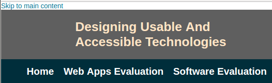Selection Focus
All navigational menu and link items have distinct focus graphics, so that tabbing users don't get lost, as seen in the images below
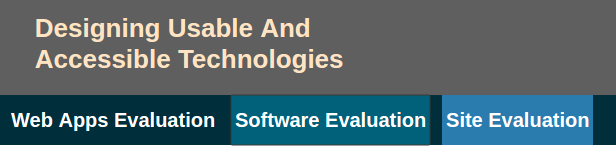 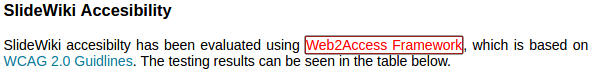Usage of aria-labels
Aria labels help the assistive technology such as screen readers to read extra information about the region of the page that users enters. Those have been used throughout different sections of the page as seen in the next image.
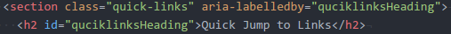Responsive Design
This website has been desinged with the responsiveness in mind. The images below show this website rendered in an Android Browser.
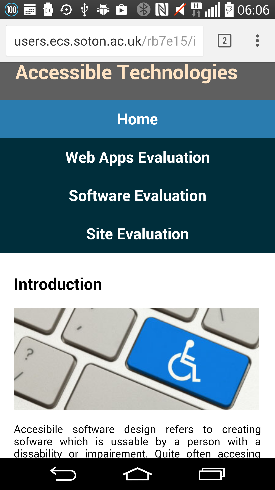 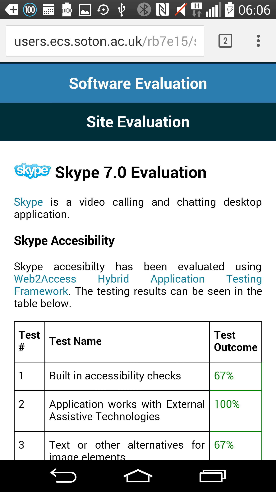 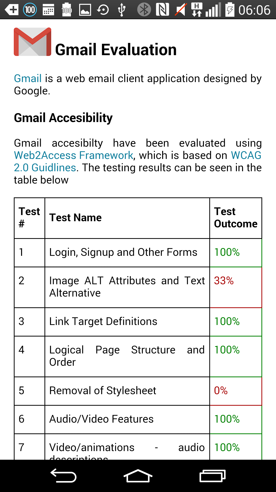Site's Accessibility
Websites accessibility has been evaluated using Web2Access Framework, which is based on WCAG 2.0 Guidelines. Due to site being purely informational and non functional, it is fairly easy to score 100% in all the tests. This site has been thoroughly tested with the WebAim extension to ensure accessible HTML. As well as NVDA was used to listen to the tabbing and keyboard responses on the website. The testing results can be seen in the table below.
| Test # | Test Name | Test Outcome |
|---|---|---|
| 1 | Login, Signup and Other Forms | 100% |
| 2 | Image ALT Attributes and Text Alternative | 100% |
| 3 | Link Target Definitions | 100% |
| 4 | Logical Page Structure and Order | 100% |
| 5 | Removal of Stylesheet | 100% |
| 6 | Audio/Video Features | 100% |
| 7 | Video/animations - audio descriptions | 100% |
| 8 | Appropriate use of Tables | 100% |
| 9 | Tab Orderings Correct and Logical | 100% |
| 10 | Page Functionality with Keyboard and Touch Screen | 100% |
| 11 | Accessibility of Text Editors | 100% |
| 12 | Appropriate Feedback | 100% |
| 13 | Contrast and Colour Check | 100% |
| 14 | Page Integrity when Zooming | 100% |
| 15 | Text size, style, blinking elements and Readability | 100% |
Site's Usability
Site's usability has been evaluated using UserFocus Web usability guidelines. It can be concluded that application lacks intuitive and non verbose homepage. The link of the website which consists of the student user-name and ECS deparment's host name, which is no clear and does not correspond to websites content. Overall site's map is lacking. Buttons and links don't show that they have been clicked. There are no printing styles present for printing the site's content. There are no error ages present at the sites. Plus there is no any kind of support form or FAQs available.
Site's HTML Validation
The HTML validation indicates no errors and only 1 warning, which states that name attribute should not be used within an anchor, as seen in the image below.
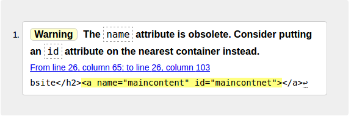Site's CSS Validation
The CSS validation indicates no errors at all in the code, as seen in the image below.
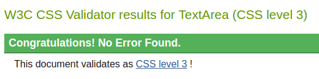Site's Cross Compatibility
Website has been tested on the latest releases of all major browsers like Google Chrome, Firefox, Microsoft Edge and Internet Explorer on Ubuntu 14.1 and Windows 10 platforms, as well as on Android mobile devices as seen before. Website works renders correctly on all of them, except the Internet explorer. Some results of this testing can be seen below.
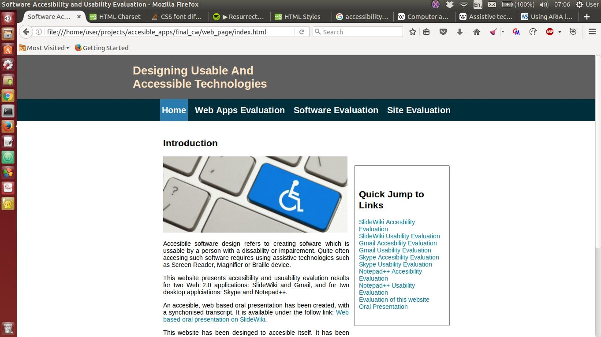 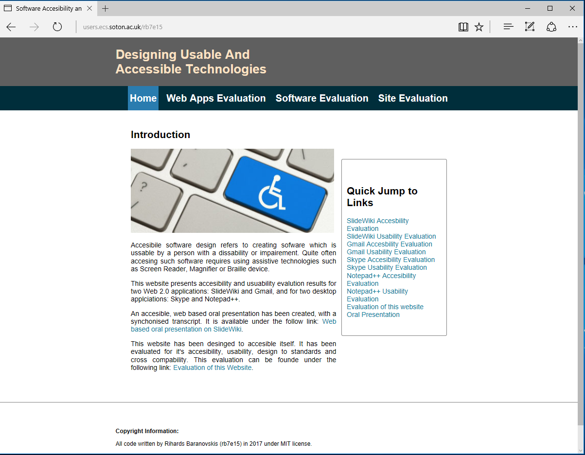 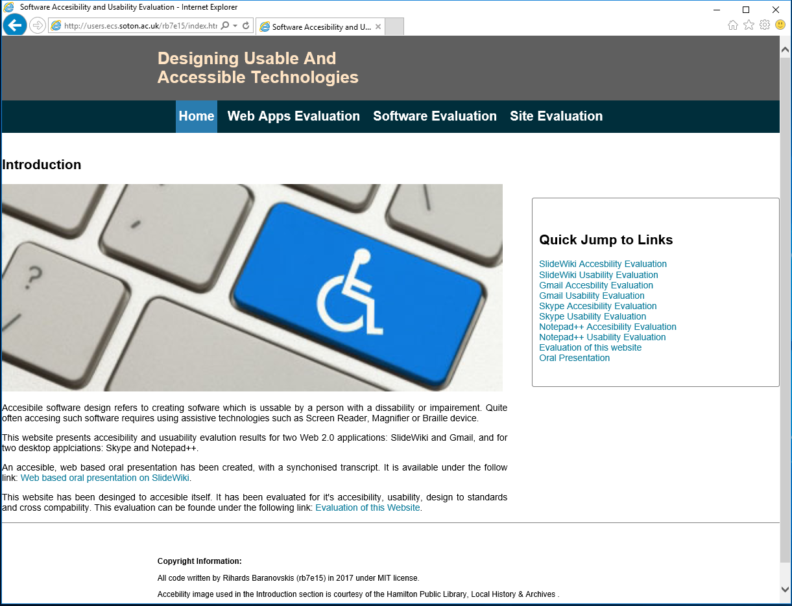